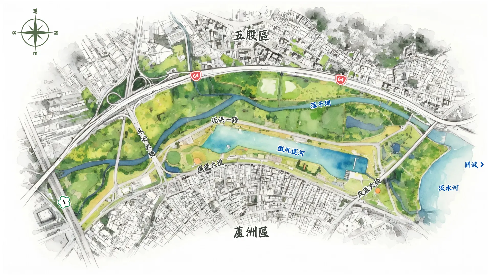

四斑細蟌
四斑細蟌
四斑細蟌是一種非常稀有的豆娘，只生活在特殊的河口蘆葦濕地環境。


在五股濕地，有好多好多種獨特的物種，他們可能偷偷藏在蘆葦叢裡或水面底下，要靜悄悄的仔細觀察才能看到他們喔！
四斑細蟌是一種非常稀有的豆娘，只生活在特殊的河口蘆葦濕地環境。
東方環頸鴴是台灣海濱及河口濕地極為常見的小型水鳥，牠們是台灣度冬數量最多的水鳥之一，以其特殊的「小跑、停下、啄食」覓食節奏著稱。
小水鴨是台灣冬季數量最多、體型最小的雁鴨科鳥類。雄鳥在繁殖期換上豔麗羽色後，頭部的綠色眼罩與尾部的黃色斑塊極具辨識度。
蘆葦是濕地生態系中極為重要的高大禾草，常成片生長於水陸交界處，能過濾泥沙與淨化水質，其更是四斑細蟌、水鳥等眾多生物賴以生存的家園。